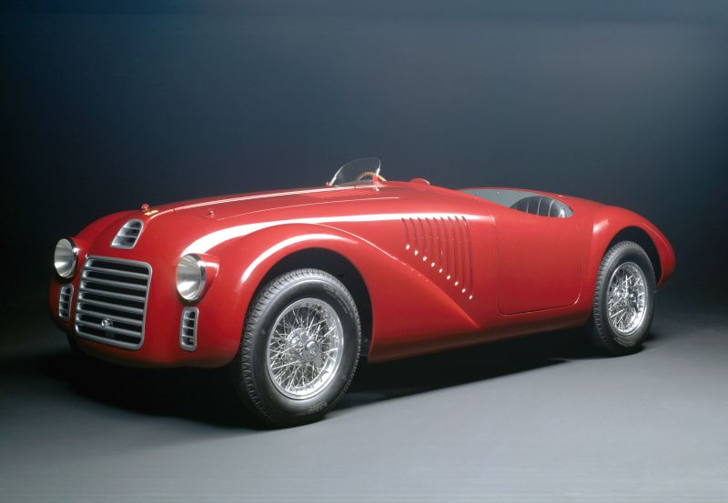

A Ferrari foi fundada em 1939 por Enzo Ferrari, originalmente como uma divisão da Alfa Romeo. Localizada em Maranello, Itália, a marca se destacou por sua dedicação à alta performance e ao design inovador.
Lançado em 1947, o Ferrari 125 S foi o primeiro carro produzido pela marca. Equipado com um motor V12, ele marcou o início de uma era de carros esportivos de alto desempenho.